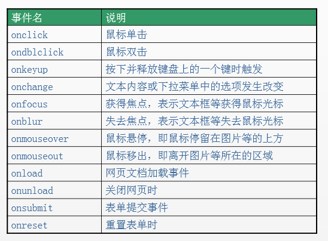
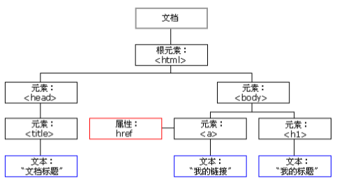
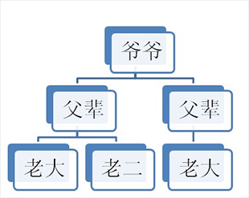
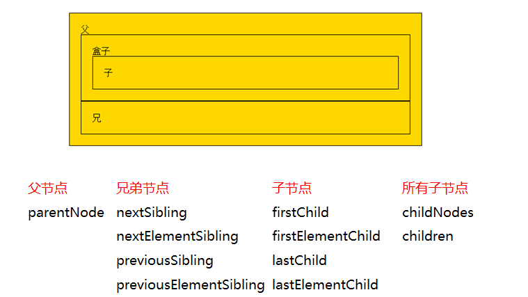

目录
1.背景介绍
2.知识剖析
3.常见问题
4.解决方案
5.编码实战
6.扩展思考
7.参考文献
8.更多讨论
前言
JavaScript的组成
JavaScript基础分为三个部分：
ECMAScript：JavaScript的语法标准。包括变量、表达式、运算符、函数、if语句、for语句等。
DOM：文档对象模型，操作网页上的元素的API。比如让盒子移动、变色、轮播图等。
BOM：浏览器对象模型，操作浏览器部分功能的API。比如让浏览器自动滚动。
JS是以事件驱动为核心的一门语言。
事件的三要素：事件源、事件、事件驱动程序。
事件源：引发后续事件的html标签。
事件：js已经定义好了（常见的事件名见下图）。
事件驱动程序：对样式和html的操作。也就是DOM。
事件：js已经定义好了（常见的事件名见下图）。

事件驱动程序：对样式和html的操作。也就是DOM。
代码书写步骤如下
（1）获取事件源：document.getElementById(“box”);
（2）绑定事件： 事件源box.事件onclick = function(){ 事件驱动程序 };
（3）书写事件驱动程序：关于DOM的操作
举例：见demo
下面对事件的三要素分别介绍
获取事件源的常见方式如下：
var div1 = document.getElementById("box1"); //方式一：通过 id 获取单个标签
var arr1 = document.getElementsByTagName("div1"); //方式二：通过 标签名 获得 标签数组，所以有s
var arr2 = document.getElementsByClassName("hehe"); //方式三：通过 类名 获得 标签数组，所以有s
方式一：直接绑定匿名函数
方式二：先单独定义函数，再绑定
方式三：行内绑定
我们在上面是拿alert举例，不仅如此，我们还可以操作标签的属性和样式。
什么是DOM
DOM（document object model）：文档对象模型。DOM 为文档提供了结构化表示，并定义了如何通过脚本来访问文档结构。目的其实就是为了能让js操作html元素而制定的一个规范。DOM就是由节点组成的。
解析过程
HTML加载完毕，渲染引擎会在内存中把HTML文档，生成一个DOM树，getElementById是获取内中DOM上的元素节点。然后操作的时候修改的是该元素的属性。
DOM树（一切都是节点）

上图可知，在HTML当中，一切都是节点：
元素节点：HMTL标签。
文本节点：标签中的文字（比如标签之间的空格、换行）
属性节点：：标签的属性。
整个html文档就是一个文档节点。所有的节点都是Object。
DOM可以做什么
1.找对象（元素节点）
2.设置元素的属性值
3.设置元素的样式
4.动态创建和删除元素
5.事件的触发响应：事件源、事件、事件的驱动程序
DOM节点的获取方式其实就是获取事件源的方式
操作元素节点，必须首先找到该节点。有三种方式可以获取DOM节点：
var div1 = document.getElementById("box1"); //方式一：通过 id 获取单个标签
var arr1 = document.getElementsByTagName("div1"); //方式二：通过 标签名 获得 标签数组，所以有s
var arr2 = document.getElementsByClassName("hehe"); //方式三：通过 类名 获得 标签数组，所以有s
DOM的节点并不是孤立的，因此可以通过DOM节点之间的相对关系对它们进行访问。如下：

节点的访问关系，是以属性的方式存在的。
JS中的父子兄访问关系：

重点知道parentNode和children这两个属性的用法。
首先了解一点就是：节点的操作都是函数（方法）。
1.创建节点
格式如下：
新的标签(元素节点) = document.createElement("标签名");
见demo
2.插入节点
插入节点有两种方式，它们的含义是不同的。
方式1：父节点.appendChild(新的子节点);
解释：父节点的最后插入一个新的子节点。
方式2：父节点.insertBefore(新的子节点,作为参考的子节点)
解释：在参考节点前插入一个新的节点。如果参考节点为null，那么他将在父节点最后插入一个子节点。
3.删除节点
格式如下：
父节点.removeChild(子节点);
解释：用父节点删除子节点。必须要指定是删除哪个子节点。
如果我想删除自己这个节点，可以这么做：
node1.parentNode.removeChild(node1);
1.获取节点的属性值
方式1：
元素节点.属性;
元素节点[属性];
方式2：（推荐）
元素节点.getAttribute("属性名称");
见demo
方式1和方式2的区别在于：前者是直接操作标签，后者是把标签作为DOM节点。推荐方式2。
2.设置节点的属性值
方式1举例：（设置节点的属性值）
myNode.src = "img1/2.jpg" //修改src的属性值
myNode.className = "image2-box"; //修改class的name
方式2：（推荐）
元素节点.setAttribute(属性名, 新的属性值);
见demo
3.删除节点的属性
格式：
元素节点.removeAttribute(属性名);
https://www.cnblogs.com/smyhvae/p/8366012.html
讨论时间到，欢迎大家提问！
感谢大家观看
By 何岳